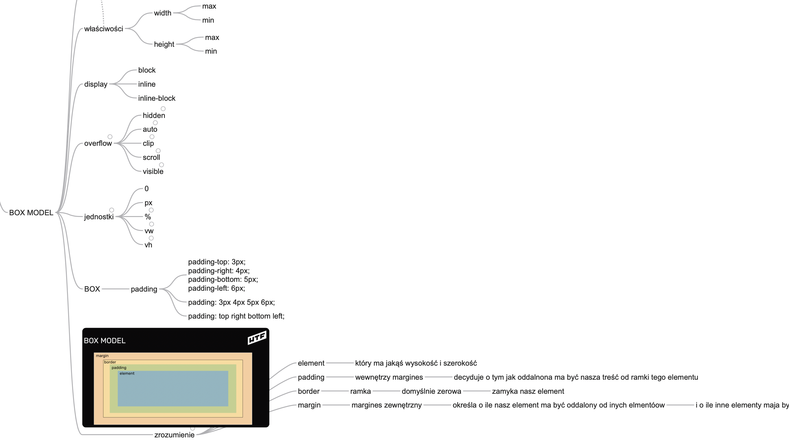

18 maja, poniedziałek
Dzień piąty
I nastał wieczór, i nastał ranek, dzień piąty. Hm.. to już chyba moduł czwarty. Tak, zdecydowanie, czwórka poszła w ruch. Prace domowe zrobione. Dziennik hula xD. Była nauka BOX’a. Tak, display, overflow i zabawa kształtami. Zawsze ciekawi mnie kiedy poznaje coś nowego, jak to powstawało. Widząc logikę lubię sobie wyobrazić twórców, którzy siedząc nad tematem wpadali na poszczególne pomysły i uznawali je “za bardzo dobre” ;-) To chyba tyle. Nie zawiele fascynacji miało miejsce, poza wpadaniem w stan lekkiego flow przy kodzie. Acha, wymyśliłem se co zrobię, czyli jaką apkę zaprojektuje. Jest pomysł i narazie nigdzie go nie widzę w takim wykonaniu jak to czuję w sobie. A mianowicie, ponieważ sam korzystam w organizacji swoich spraw z systemu GTD Davida Allena, mam w tym trochę doświadczenia, wiem co działa i jak, spróbuję stworzyć taką apkę dla siebie i pod siebie. Bez szaleństw ale lubie mieć cel w tym czego się uczę. I może mały samouczek do tego? Zobaczymy.
